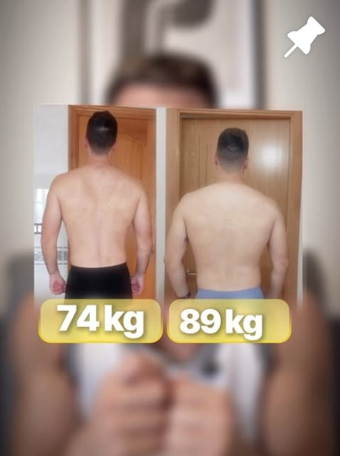

Aprender a entrenar
Técnica, intensidad real y registro. Por primera vez sabes si progresas o solo vas al gimnasio.
Si llevas años entrenando, trabajas muchas horas y te sigues viendo igual, no te falta esfuerzo: te falta que construya músculo. Te ayudo a perder grasa construyendo músculo, con intensidad bien aplicada y una vida activa. Consigue más con el esfuerzo que ya haces.
El formulario son 2 minutos. Lo leo yo y te digo qué cambiaría en tu caso.
No es falta de ganas ni de esfuerzo. Es a dónde va ese esfuerzo.
La mayoría entra al gimnasio a "quemar calorías": más cardio, más series, menos comida. Pierdes algo de grasa… y también músculo. Y el músculo es lo que mantiene tu metabolismo trabajando, también las 10 horas que pasas sentado.
Por eso con mis clientes no empiezo quitando comida ni metiendo cardio. Empiezo construyendo músculo, enseñando a entrenar con intensidad de verdad y sumando pasos durante el día. El motor primero; la grasa baja después.
"Consigue más con el esfuerzo que ya haces."
Seis meses con un orden claro y un plan hecho para tu jornada.
Hombres que llevan tiempo entrenando, con jornadas largas, y esperaban más de su físico: les ayudo a perder grasa construyendo músculo —el músculo es su metabolismo— sacando más del esfuerzo que ya hacen con intensidad bien aplicada y una vida activa.
Técnica, intensidad real y registro. Por primera vez sabes si progresas o solo vas al gimnasio.
Cargas que suben, más músculo y la grasa bajando sin vivir a dieta. Más pasos, poco a poco.
Defines lo construido y te quedas con un sistema que aguanta hasta la semana imposible.
Me mandas tu registro y tus pasos, te corrijo la técnica por vídeo y ajusto el plan. Hablas directamente conmigo.
No te voy a pedir más días ni más horas. Te voy a pedir que las que ya haces sirvan, y que te muevas más dentro de tu jornada. Para la semana imposible, el plan tiene versión corta.

"El músculo es tu metabolismo."
Trabajo con hombres que ya entrenan, que trabajan muchas horas y que esperaban más de su físico. No les pido más esfuerzo: les enseño a que el que ya hacen construya músculo.
[Mi historia: pendiente de completar con Jorge.]
2 minutos en el formulario: cuánto llevas entrenando, tu jornada y qué esperabas ver.
Si encajamos, te llamo y te digo qué cambiaría en tu caso.
Tu plan hecho para tu jornada y la primera revisión en el calendario.
Lo leo yo personalmente. Si encajamos, te escribo para hablar.
Lo que casi nadie aplica: intensidad bien aplicada, registro y progresión. Saber ejercicios no es lo mismo que saber entrenar.
Sí. No te pido más días: te pido mejores series y moverte más dentro de tu jornada. Y para la semana imposible, el plan tiene versión corta.
No. Empezamos por construir músculo y por los pasos del día. El cardio, si tiene sentido en tu caso, después.
No. La comida se ajusta a tu vida, con proteína en cada comida, y aguanta comidas fuera.
También es para ti, pero sin comerte la nevera: ganar músculo con un plan, no ganar grasa sin control.
Depende de dónde partas. Empezamos por tu número actual y subimos poco a poco hasta tu mínimo diario.
Depende de tu caso y de cuánto tiempo trabajemos juntos. Rellena el formulario y te lo explico cuando hablemos.
O escríbeme MOTOR por privado en @jorgesdiez y te contesto yo.